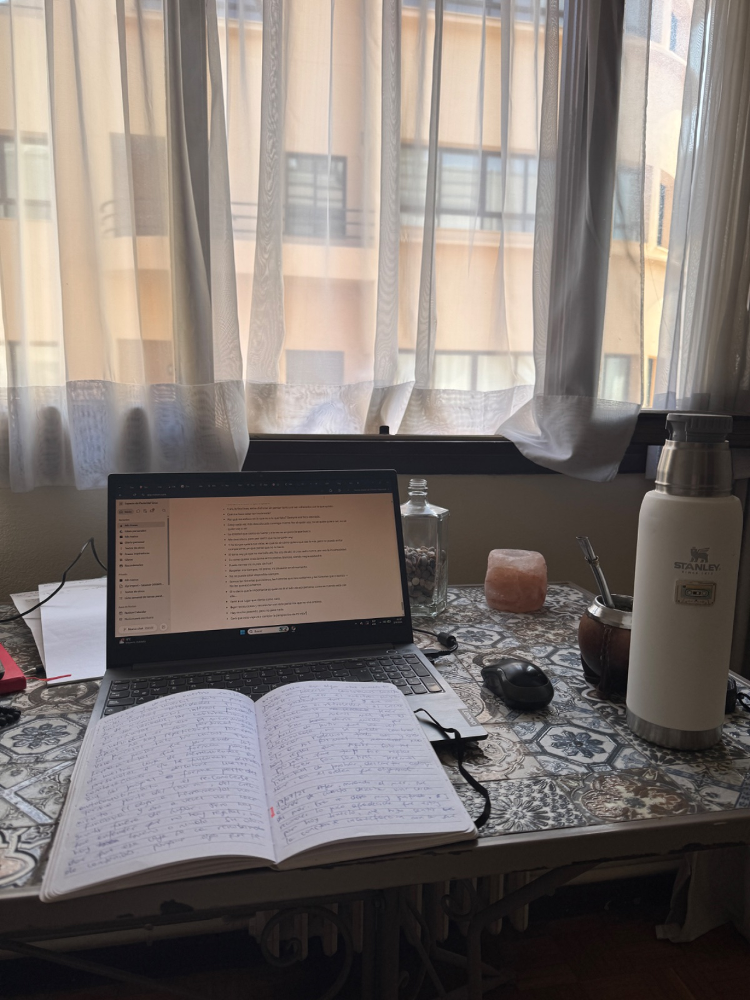

escritura
La escritura catártica es mi forma de descargar. Lo que queda en el papel sale crudo, desordenado, tal cual lo siento.
No busco textos de escritura prolija. Busco la expresión sin censura, esa censura que sí vivencia mi voz.

la escritura me salvó de la asfixiade lo no dicho, que es mucho
para mí
Es bajar el pensamiento compulsivo. Sacar de adentro lo que no para de dar vueltas, hasta que la mente se tranquiliza.
Es poner en el papel lo que no me animo a admitir en voz alta. No solo lo que me cuesta decirle a un otro: también lo que pienso o siento y prefiero no mostrar, porque me siento expuesta.
Es la libertad de ser todo lo negativa que quiero. O de desear en grande, aunque parezca falopa.
Es ordenarme por dentro. Al buscar las palabras, algo se acomoda. A veces, escribiendo, conecto cosas que pensando no me salían.
Es un lugar donde estar cuando ni yo me entiendo.
Y es un rato para mí. Conectar conmigo. A veces, es como meditar.
para vos
Te cuento todo esto porque la escritura está disponible para cualquiera, y la usamos poco. Diez minutos, en cualquier momento, en papel o en el celular. Es gratis y se puede hacer donde sea. Funciona como una respiración profunda: te devuelve a vos.
Y no es solo cosa mía: hace rato que se estudia, y los resultados dicen lo mismo.
no hace falta saber escribir,alcanza con querer sacarlo
prácticas posibles
Estas son las que a mí me funcionan. Tomá las que te sirvan, dejá el resto.
La palabra que no era, el paréntesis abierto, la letra cambiada. Si frenás a corregir, la cabeza toma el control y lo que venía saliendo se corta.
Cuando terminás, cerrás el cuaderno. Releer en caliente te devuelve a lo que acabás de sacar. Y si no lo volvés a leer nunca, ya cumplió su función.
Si mientras escribís pensás en cómo suena, ya hay alguien más en la hoja. Cuando es solo para vos, aparece lo que te guardás, que suele ser justo lo que necesitaba salir.
Cualquier cosa sirve para arrancar. Y si no tenés de dónde agarrarte, escribí justamente eso: que no sabés qué escribir. A veces, a partir de ahí, el resto sale solo, hacia un lugar que no esperabas. Otras tantas no sale absolutamente nada interesante, y también está bien.